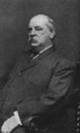
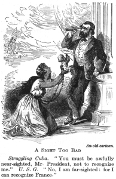
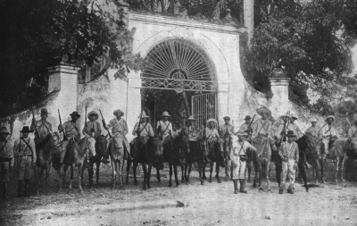
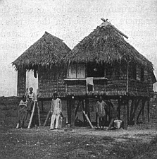
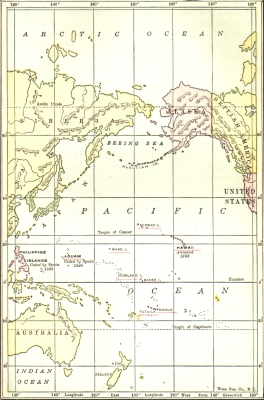

AMERICA A WORLD POWER (1865-1900)
It has now become a fashion, sanctioned by wide usage and by eminent historians, to speak of America, triumphant over Spain and possessed of new colonies, as entering the twentieth century in the rôle of "a world power," for the first time. Perhaps at this late day, it is useless to protest against the currency of the idea. Nevertheless, the truth is that from the fateful moment in March, 1775, when Edmund Burke unfolded to his colleagues in the British Parliament the resources of an invincible America, down to the settlement at Versailles in 1919 closing the drama of the World War, this nation has been a world power, influencing by its example, by its institutions, by its wealth, trade, and arms the course of international affairs. And it should be said also that neither in the field of commercial enterprise nor in that of
diplomacy has it been wanting in spirit or ingenuity.
When John Hay, Secretary of State, heard that an American citizen, Perdicaris, had been seized by Raisuli, a Moroccan bandit, in 1904, he wired his brusque message: "We want Perdicaris alive or Raisuli dead."
This was but an echo of Commodore Decatur's equally characteristic answer, "Not a minute," given nearly a hundred years before to the pirates of Algiers begging for time to consider whether they would cease preying upon American merchantmen. Was it not as early as 1844 that the American commissioner, Caleb Cushing, taking advantage of the British Opium War on China, negotiated with the Celestial Empire a successful commercial treaty? Did he not then exultantly exclaim: "The laws of the Union follow its citizens and its banner protects them even within the domain of the Chinese Empire"? Was it not almost half a century before the battle of Manila Bay in 1898, that Commodore Perry with an adequate naval force "gently coerced Japan into friendship with us," leading all the nations of the earth in the opening of that empire to the trade of the Occident? Nor is it inappropriate in this connection to recall the fact that the Monroe Doctrine celebrates in 1923 its hundredth
anniversary.
American Foreign Relations (1865-98)
French Intrigues in Mexico Blocked. —Between the war for the union and the war with Spain, the Department of State had many an occasion to present the rights of America among the powers of the world. Only a little while after the civil conflict came to a close, it was called upon to deal with a dangerous situation created in Mexico by the ambitions of Napoleon III. During the administration of Buchanan, Mexico had fallen into disorder through the strife of the Liberal and the Clerical parties; the President asked for authority to use American troops to bring to a peaceful haven "a wreck upon the ocean, drifting about as she is impelled by different factions." Our own domestic crisis then intervened.
Observing the United States heavily involved in its own problems, the great powers, England, France, and Spain, decided in the autumn of 1861 to take a hand themselves in restoring order in Mexico. They entered into an agreement to enforce the claims of their citizens against Mexico and to protect their subjects residing in that republic. They invited the United States to join them, and, on meeting a polite refusal, they prepared for a combined military and naval demonstration on their own account. In the midst of this action England and Spain, discovering the sinister purposes of Napoleon, withdrew their troops and left the field to him.
The French Emperor, it was well known, looked with jealousy upon the growth of the United States and dreamed of establishing in the Western hemisphere an imperial power to offset the American republic.
Intervention to collect debts was only a cloak for his deeper designs. Throwing off that guise in due time, he made the Archduke Maximilian, a brother of the ruler of Austria, emperor in Mexico, and surrounded his throne by French soldiers, in spite of all protests.
This insolent attack upon the Mexican republic, deeply resented in the United States, was allowed to drift in its course until 1865. At that juncture General Sheridan was dispatched to the Mexican border with a large armed force; General Grant urged the use of the American army to expel the French from this continent. The Secretary of State, Seward, counseled negotiation first, and, applying the Monroe Doctrine, was able to prevail upon Napoleon III to withdraw his troops. Without the support of French arms, the sham empire in Mexico collapsed like a house of cards and the unhappy Maximilian, the victim of French ambition and intrigue, met his death at the hands of a Mexican firing squad.
Alaska Purchased. —The Mexican affair had not been brought to a close before the Department of State was busy with negotiations which resulted in the purchase of Alaska from Russia. The treaty of cession,
signed on March 30, 1867, added to the United States a domain of nearly six hundred thousand square miles, a territory larger than Texas and nearly three-fourths the size of the Louisiana purchase. Though it was a distant colony separated from our continental domain by a thousand miles of water, no question of
"imperialism" or "colonization foreign to American doctrines" seems to have been raised at the time. The treaty was ratified promptly by the Senate. The purchase price, $7,200,000, was voted by the House of Representatives after the display of some resentment against a system that compelled it to appropriate money to fulfill an obligation which it had no part in making. Seward, who formulated the treaty, rejoiced, as he afterwards said, that he had kept Alaska out of the hands of England.
American Interest in the Caribbean. —Having achieved this diplomatic triumph, Seward turned to the increase of American power in another direction. He negotiated, with Denmark, a treaty providing for the purchase of the islands of St. John and St. Thomas in the West Indies, strategic points in the Caribbean for sea power. This project, long afterward brought to fruition by other men, was defeated on this occasion by the refusal of the Senate to ratify the treaty. Evidently it was not yet prepared to exercise colonial dominion over other races.
Undaunted by the misadventure in Caribbean policies, President Grant warmly advocated the acquisition of Santo Domingo. This little republic had long been in a state of general disorder. In 1869 a treaty of annexation was concluded with its president. The document Grant transmitted to the Senate with his cordial approval, only to have it rejected. Not at all changed in his opinion by the outcome of his effort, he continued to urge the subject of annexation. Even in his last message to Congress he referred to it, saying that time had only proved the wisdom of his early course. The addition of Santo Domingo to the American sphere of protection was the work of a later generation. The State Department, temporarily checked, had to bide its time.
The Alabama Claims Arbitrated. —Indeed, it had in hand a far more serious matter, a vexing issue that grew out of Civil War diplomacy. The British government, as already pointed out in other connections, had permitted Confederate cruisers, including the famous Alabama, built in British ports, to escape and prey upon the commerce of the Northern states. This action, denounced at the time by our government as a grave breach of neutrality as well as a grievous injury to American citizens, led first to remonstrances and finally to repeated claims for damages done to American ships and goods. For a long time Great Britain was firm. Her foreign secretary denied all obligations in the premises, adding somewhat curtly that "he wished to say once for all that Her Majesty's government disclaimed any responsibility for the losses and hoped that they had made their position perfectly clear." Still President Grant was not persuaded that the door of diplomacy, though closed, was barred. Hamilton Fish, his Secretary of State, renewed the demand.
Finally he secured from the British government in 1871 the treaty of Washington providing for the arbitration not merely of the Alabama and other claims but also all points of serious controversy between the two countries.
The tribunal of arbitration thus authorized sat at Geneva in Switzerland, and after a long and careful review of the arguments on both sides awarded to the United States the lump sum of $15,500,000 to be distributed among the American claimants. The damages thus allowed were large, unquestionably larger than strict justice required and it is not surprising that the decision excited much adverse comment in England. Nevertheless, the prompt payment by the British government swept away at once a great cloud of ill-feeling in America. Moreover, the spectacle of two powerful nations choosing the way of peaceful arbitration to settle an angry dispute seemed a happy, if illusory, omen of a modern method for avoiding the arbitrament of war.
Samoa. —If the Senate had its doubts at first about the wisdom of acquiring strategic points for naval power in distant seas, the same could not be said of the State Department or naval officers. In 1872
Commander Meade, of the United States navy, alive to the importance of coaling stations even in mid-ocean, made a commercial agreement with the chief of Tutuila, one of the Samoan Islands, far below the
equator, in the southern Pacific, nearer to Australia than to California. This agreement, providing among other things for our use of the harbor of Pago Pago as a naval base, was six years later changed into a formal treaty ratified by the Senate.
Such enterprise could not escape the vigilant eyes of England and Germany, both mindful of the course of the sea power in history. The German emperor, seizing as a pretext a quarrel between his consul in the islands and a native king, laid claim to an interest in the Samoan group. England, aware of the dangers arising from German outposts in the southern seas so near to Australia, was not content to stand aside. So it happened that all three countries sent battleships to the Samoan waters, threatening a crisis that was fortunately averted by friendly settlement. If, as is alleged, Germany entertained a notion of challenging American sea power then and there, the presence of British ships must have dispelled that dream.
The result of the affair was a tripartite agreement by which the three powers in 1889 undertook a protectorate over the islands. But joint control proved unsatisfactory. There was constant friction between the Germans and the English. The spheres of authority being vague and open to dispute, the plan had to be abandoned at the end of ten years. England withdrew altogether, leaving to Germany all the islands except Tutuila, which was ceded outright to the United States. Thus one of the finest harbors in the Pacific, to the intense delight of the American navy, passed permanently under American dominion. Another triumph in diplomacy was set down to the credit of the State Department.
Cleveland and the Venezuela Affair. —In the relations with South America, as well as in those with the distant Pacific, the diplomacy of the government at Washington was put to the test. For some time it had been watching a dispute between England and Venezuela over the western boundary of British Guiana and, on an appeal from Venezuela, it had taken a lively interest in the contest. In 1895 President Cleveland saw that Great Britain would yield none of her claims. After hearing the arguments of Venezuela, his Secretary of State, Richard T. Olney, in a note none too conciliatory, asked the British government whether it was willing to arbitrate the points in controversy. This inquiry he accompanied by a warning to the effect that the United States could not permit any European power to contest its mastery in this hemisphere. "The United States," said the Secretary, "is practically sovereign on this continent and its fiat is law upon the subjects to which it confines its interposition.... Its infinite resources, combined with its isolated position, render it master of the situation and practically invulnerable against any or all other powers."
The reply evoked from the British government by this strong statement was firm and clear. The Monroe Doctrine, it said, even if not so widely stretched by interpretation, was not binding in international law; the dispute with Venezuela was a matter of interest merely to the parties involved; and arbitration of the question was impossible. This response called forth President Cleveland's startling message of 1895. He asked Congress to create a commission authorized to ascertain by researches the true boundary between Venezuela and British Guiana. He added that it would be the duty of this country "to resist by every means in its power, as a willful aggression upon its rights and interests, the appropriation by Great Britain of any lands or the exercise of governmental jurisdiction over any territory which, after investigation, we have determined of right belongs to Venezuela." The serious character of this statement he thoroughly understood. He declared that he was conscious of his responsibilities, intimating that war, much as it was to be deplored, was not comparable to "a supine submission to wrong and injustice and the consequent loss of national self-respect and honor."

Grover Cleveland
The note of defiance which ran through this message, greeted by shrill cries of enthusiasm in many circles, was viewed in other quarters as a portent of war. Responsible newspapers in both countries spoke of an armed settlement of the dispute as inevitable. Congress created the commission and appropriated money for the investigation; a body of learned men was appointed to determine the merits of the conflicting boundary claims. The British government, deaf to the clamor of the bellicose section of the London press, deplored the incident, courteously replied in the affirmative to a request for assistance in the search for evidence, and finally agreed to the proposition that the issue be submitted to arbitration. The outcome of this somewhat perilous dispute contributed not a little to Cleveland's reputation as "a sterling representative of the true American spirit." This was not diminished when the tribunal of arbitration found that Great Britain was on the whole right in her territorial claims against Venezuela.
The Annexation of Hawaii. —While engaged in the dangerous Venezuela controversy, President Cleveland was compelled by a strange turn in events to consider the annexation of the Hawaiian Islands in the mid-Pacific. For more than half a century American missionaries had been active in converting the natives to the Christian faith and enterprising American business men had been developing the fertile sugar plantations. Both the Department of State and the Navy Department were fully conscious of the strategic relation of the islands to the growth of sea power and watched with anxiety any developments likely to bring them under some other Dominion.
The country at large was indifferent, however, until 1893, when a revolution, headed by Americans, broke out, ending in the overthrow of the native government, the abolition of the primitive monarchy, and the retirement of Queen Liliuokalani to private life. This crisis, a repetition of the Texas affair in a small theater, was immediately followed by a demand from the new Hawaiian government for annexation to the United States. President Harrison looked with favor on the proposal, negotiated the treaty of annexation, and laid it before the Senate for approval. There it still rested when his term of office was brought to a close.
Harrison's successor, Cleveland, it was well known, had doubts about the propriety of American action in Hawaii. For the purpose of making an inquiry into the matter, he sent a special commissioner to the islands. On the basis of the report of his agent, Cleveland came to the conclusion that "the revolution in the island kingdom had been accomplished by the improper use of the armed forces of the United States and that the wrong should be righted by a restoration of the queen to her throne." Such being his matured conviction, though the facts upon which he rested it were warmly controverted, he could do nothing but withdraw the treaty from the Senate and close the incident.
To the Republicans this sharp and cavalier disposal of their plans, carried out in a way that impugned the motives of a Republican President, was nothing less than "a betrayal of American interests." In their platform of 1896 they made clear their position: "Our foreign policy should be at all times firm, vigorous, and dignified and all our interests in the Western hemisphere carefully watched and guarded. The Hawaiian Islands should be controlled by the United States and no foreign power should be permitted to interfere with them." There was no mistaking this view of the issue. As the vote in the election gave

popular sanction to Republican policies, Congress by a joint resolution, passed on July 6, 1898, annexed the islands to the United States and later conferred upon them the ordinary territorial form of government.
Cuba and the Spanish War
Early American Relations with Cuba. —The year that brought Hawaii finally under the American flag likewise drew to a conclusion another long controversy over a similar outpost in the Atlantic, one of the last remnants of the once glorious Spanish empire—the island of Cuba.
For a century the Department of State had kept an anxious eye upon this base of power, knowing full well that both France and England, already well established in the West Indies, had their attention also fixed upon Cuba. In the administration of President Fillmore they had united in proposing to the United States a tripartite treaty guaranteeing Spain in her none too certain ownership. This proposal, squarely rejected, furnished the occasion for a statement of American policy which stood the test of all the years that followed; namely, that the affair was one between Spain and the United States alone.
In that long contest in the United States for the balance of power between the North and South, leaders in the latter section often thought of bringing Cuba into the union to offset the free states. An opportunity to announce their purposes publicly was afforded in 1854 by a controversy over the seizure of an American ship by Cuban authorities. On that occasion three American ministers abroad, stationed at Madrid, Paris, and London respectively, held a conference and issued the celebrated "Ostend Manifesto." They united in declaring that Cuba, by her geographical position, formed a part of the United States, that possession by a foreign power was inimical to American interests, and that an effort should be made to purchase the island from Spain. In case the owner refused to sell, they concluded, with a menacing flourish, "by every law, human and divine, we shall be justified in wresting it from Spain if we possess the power." This startling proclamation to the world was promptly disowned by the United States government.
Revolutions in Cuba. —For nearly twenty years afterwards the Cuban question rested. Then it was revived in another form during President Grant's administrations, when the natives became engaged in a destructive revolt against Spanish officials. For ten years—1868-78—a guerrilla warfare raged in the island. American citizens, by virtue of their ancient traditions of democracy, naturally sympathized with a war for independence and self-government. Expeditions to help the insurgents were fitted out secretly in

American ports. Arms and supplies were smuggled into Cuba. American soldiers of fortune joined their ranks. The enforcement of neutrality against the friends of Cuban independence, no pleasing task for a sympathetic President, the protection of American lives and property in the revolutionary area, and similar matters kept our government busy with Cuba for a whole decade.
A brief lull in Cuban disorders was followed in 1895 by a renewal of the revolutionary movement. The contest between the rebels and the Spanish troops, marked by extreme cruelty and a total disregard for life and property, exceeded all bounds of decency, and once more raised the old questions that had tormented Grant's administration. Gomez, the leader of the revolt, intent upon provoking American interference, laid waste the land with fire and sword. By a proclamation of November 6, 1895, he ordered the destruction of sugar plantations and railway connections and the closure of all sugar factories. The work of ruin was completed by the ruthless Spanish general, Weyler, who concentrated the inhabitants from rural regions into military camps, where they died by the hundreds of disease and starvation. Stories of the atrocities, bad enough in simple form, became lurid when transmuted into American news and deeply moved the sympathies of the American people. Sermons were preached about Spanish misdeeds; orators demanded that the Cubans be sustained "in their heroic struggle for independence"; newspapers, scouting the ordinary forms of diplomatic negotiation, spurned mediation and demanded intervention and war if necessary.
Underwood and Underwood, N.Y.
Cuban Revolutionists
President Cleveland's Policy. —Cleveland chose the way of peace. He ordered the observance of the rule of neutrality. He declined to act on a resolution of Congress in favor of giving to the Cubans the rights of belligerents. Anxious to bring order to the distracted island, he tendered to Spain the good offices of the United States as mediator in the contest—a tender rejected by the Spanish government with the broad hint that President Cleveland might be more vigorous in putting a stop to the unlawful aid in money, arms, and supplies, afforded to the insurgents by American sympathizers. Thereupon the President returned to the course he had marked out for himself, leaving "the public nuisance" to his successor, President McKinley.
Republican Policies. —The Republicans in 1897 found themselves in a position to employ that "firm, vigorous, and dignified" foreign policy which they had approved in their platform. They had declared:
"The government of Spain having lost control of Cuba and being unable to protect the property or lives of resident American citizens or to comply with its treaty obligations, we believe that the government of the United States should actively use its influence and good offices to restore peace and give independence to the island." The American property in Cuba to which the Republicans referred in their platform amounted by this time to more than fifty million dollars; the commerce with the island reached more than one
hundred millions annually; and the claims of American citizens against Spain for property destroyed totaled sixteen millions. To the pleas of humanity which made such an effective appeal to the hearts of the American people, there were thus added practical considerations of great weight.
President McKinley Negotiates. —In the face of the swelling tide of popular opinion in favor of quick, drastic, and positive action, McKinley chose first the way of diplomacy. A short time after his inauguration he lodged with the Spanish government a dignified protest against its policies in Cuba, thus opening a game of thrust and parry with the suave ministers at Madrid. The results of the exchange of notes were the recall of the obnoxious General Weyler, the appointment of a governor-general less bloodthirsty in his methods, a change in the policy of concentrating civilians in military camps, and finally a promise of "home rule" for Cuba. There is no doubt that the Spanish government was eager to avoid a war that could have but one outcome. The American minister at Madrid, General Woodford, was convinced that firm and patient pressure would have resulted in the final surrender of Cuba by the Spanish government.
The De Lome and the Maine Incidents. —Such a policy was defeated by events. In February, 1898, a private letter written by Señor de Lome, the Spanish ambassador at Washington, expressing contempt for the President of the United States, was filched from the mails and passed into the hands of a journalist, William R. Hearst, who published it to the world. In the excited state of American opinion, few gave heed to the grave breach of diplomatic courtesy committed by breaking open private correspondence. The Spanish government was compelled to recall De Lome, thus officially condemning his conduct.
At this point a far more serious crisis put the pacific relations of the two negotiating countries in dire peril.
On February 15, the battleship Maine, riding in the harbor of Havana, was blown up and sunk, carrying to death two officers and two hundred and fifty-eight members of the crew. This tragedy, ascribed by the American public to the malevolence of Spanish officials, profoundly stirred an already furious nation.
When, on March 21, a commission of inquiry reported that the illfated ship had been blown up by a submarine mine which had in turn set off some of the ship's magazines, the worst suspicions seemed confirmed. If any one was inclined to be indifferent to the Cuban war for independence, he was now met by the vehement cry: "Remember the Maine!"
Spanish Concessions. —Still the State Department, under McKinley's steady hand, pursued the path of negotiation, Spain proving more pliable and more ready with promises of reform in the island. Early in April, however, there came a decided change in the tenor of American diplomacy. On the 4th, McKinley, evidently convinced that promises did not mean performances, instructed our minister at Madrid to warn the Spanish government that as no effective armistice had been offered to the Cubans, he would lay the whole matter before Congress. This decision, every one knew, from the temper of Congress, meant war—a prospect which excited all the European powers. The Pope took an active interest in the crisis. France and Germany, foreseeing from long experience in world politics an increase of American power and prestige through war, sought to prevent it. Spain, hopeless and conscious of her weakness, at last dispatched to the President a note promising to suspend hostilities, to call a Cuban parliament, and to grant all the autonomy that could be reasonably asked.
President McKinley Calls for War. —For reasons of his own—reasons which have never yet been fully explained—McKinley ignored the final program of concessions presented by Spain. At the very moment when his patient negotiations seemed to bear full fruit, he veered sharply from his course and launched the country into the war by sending to Congress his militant message of April 11, 1898. Without making public the last note he had received from Spain, he declared that he was brought to the end of his effort and the cause was in the hands of Congress. Humanity, the protection of American citizens and property, the injuries to American commerce and business, the inability of Spain to bring about permanent peace in the island—these were the grounds for action that induced him to ask for authority to employ military and naval forces in establishing a stable government in Cuba. They were sufficient for a public already
The Resolution of Congress. —There was no doubt of the outcome when the issue was withdrawn from diplomacy and placed in charge of Congress. Resolutions were soon introduced into the House of Representatives authorizing the President to employ armed force in securing peace and order in the island and "establishing by the free action of the people thereof a stable and independent government of their own." To the form and spirit of this proposal the Democrats and Populists took exception. In the Senate, where they were stronger, their position had to be reckoned with by the narrow Republican majority. As the resolution finally read, the independence of Cuba was recognized; Spain was called upon to relinquish her authority and withdraw from the island; and the President was empowered to use force to the extent necessary to carry the resolutions into effect. Furthermore the United States disclaimed "any disposition or intention to exercise sovereignty, jurisdiction, or control over said island except for the pacification thereof." Final action was taken by Congress on April 19, 1898, and approved by the President on the following day.
War and Victory. —Startling events then followed in swift succession. The navy, as a result in no small measure of the alertness of Theodore Roosevelt, Assistant Secretary of the Department, was ready for the trial by battle. On May 1, Commodore Dewey at Manila Bay shattered the Spanish fleet, marking the doom of Spanish dominion in the Philippines. On July 3, the Spanish fleet under Admiral Cervera, in attempting to escape from Havana, was utterly destroyed by American forces under Commodore Schley.
On July 17, Santiago, invested by American troops under General Shafter and shelled by the American ships, gave up the struggle. On July 25 General Miles landed in Porto Rico. On August 13, General Merritt and Admiral Dewey carried Manila by storm. The war was over.
The Peace Protocol. —Spain had already taken cognizance of stern facts. As early as July 26, 1898, acting through the French ambassador, M. Cambon, the Madrid government approached President McKinley for a statement of the terms on which hostilities could be brought to a close. After some skirmishing Spain yielded reluctantly to the ultimatum. On August 12, the preliminary peace protocol was signed, stipulating that Cuba should be free, Porto Rico ceded to the United States, and Manila occupied by American troops pending the formal treaty of peace. On October 1, the commissioners of the two countries met at Paris to bring about the final settlement.
Peace Negotiations. —When the day for the first session of the conference arrived, the government at Washington apparently had not made up its mind on the final disposition of the Philippines. Perhaps, before the battle of Manila Bay, not ten thousand people in the United States knew or cared where the Philippines were. Certainly there was in the autumn of 1898 no decided opinion as to what should be done with the fruits of Dewey's victory. President McKinley doubtless voiced the sentiment of the people when he stated to the peace commissioners on the eve of their departure that there had originally been no thought of conquest in the Pacific.
The march of events, he added, had imposed new duties on the country. "Incidental to our tenure in the Philippines," he said, "is the commercial opportunity to which American statesmanship cannot be indifferent. It is just to use every legitimate means for the enlargement of American trade." On this ground he directed the commissioners to accept not less than the cession of the island of Luzon, the chief of the Philippine group, with its harbor of Manila. It was not until the latter part of October that he definitely instructed them to demand the entire archipelago, on the theory that the occupation of Luzon alone could not be justified "on political, commercial, or humanitarian grounds." This departure from the letter of the peace protocol was bitterly resented by the Spanish agents. It was with heaviness of heart that they surrendered the last sign of Spain's ancient dominion in the far Pacific.
The Final Terms of Peace. —The treaty of peace, as finally agreed upon, embraced the following terms: the independence of Cuba; the cession of Porto Rico, Guam, and the Philippines to the United States; the
settlement of claims filed by the citizens of both countries; the payment of twenty million dollars to Spain by the United States for the Philippines; and the determination of the status of the inhabitants of the ceded territories by Congress. The great decision had been made. Its issue was in the hands of the Senate where the Democrats and the Populists held the balance of power under the requirement of the two-thirds vote for ratification.
The Contest in America over the Treaty of Peace. —The publication of the treaty committing the United States to the administration of distant colonies directed the shifting tides of public opinion into two distinct channels: support of the policy and opposition to it. The trend in Republican leadership, long in the direction marked out by the treaty, now came into the open. Perhaps a majority of the men highest in the councils of that party had undergone the change of heart reflected in the letters of John Hay, Secretary of State. In August of 1898 he had hinted, in a friendly letter to Andrew Carnegie, that he sympathized with the latter's opposition to "imperialism"; but he had added quickly: "The only question in my mind is how far it is now possible for us to withdraw from the Philippines." In November of the same year he wrote to Whitelaw Reid, one of the peace commissioners at Paris: "There is a wild and frantic attack now going on in the press against the whole Philippine transaction. Andrew Carnegie really seems to be off his head....
But all this confusion of tongues will go its way. The country will applaud the resolution that has been reached and you will return in the rôle of conquering heroes with your 'brows bound with oak.'"
Senator Beveridge of Indiana and Senator Platt of Connecticut, accepting the verdict of history as the proof of manifest destiny, called for unquestioning support of the administration in its final step. "Every expansion of our territory," said the latter, "has been in accordance with the irresistible law of growth. We could no more resist the successive expansions by which we have grown to be the strongest nation on earth than a tree can resist its growth. The history of territorial expansion is the history of our nation's progress and glory. It is a matter to be proud of, not to lament. We should rejoice that Providence has given us the opportunity to extend our influence, our institutions, and our civilization into regions hitherto closed to us, rather than contrive how we can thwart its designs."
This doctrine was savagely attacked by opponents of McKinley's policy, many a stanch Republican joining with the majority of Democrats in denouncing the treaty as a departure from the ideals of the republic. Senator Vest introduced in the Senate a resolution that "under the Constitution of the United States, no power is given to the federal Government to acquire territory to be held and governed permanently as colonies." Senator Hoar, of Massachusetts, whose long and honorable career gave weight to his lightest words, inveighed against the whole procedure and to the end of his days believed that the new drift into rivalry with European nations as a colonial power was fraught with genuine danger. "Our imperialistic friends," he said, "seem to have forgotten the use of the vocabulary of liberty. They talk about giving good government. 'We shall give them such a government as we think they are fitted for.' 'We shall give them a better government than they had before.' Why, Mr. President, that one phrase conveys to a free man and a free people the most stinging of insults. In that little phrase, as in a seed, is contained the germ of all despotism and of all tyranny. Government is not a gift. Free government is not to be given by all the blended powers of earth and heaven. It is a birthright. It belongs, as our fathers said, and as their children said, as Jefferson said, and as President McKinley said, to human nature itself."
The Senate, more conservative on the question of annexation than the House of Representatives composed of men freshly elected in the stirring campaign of 1896, was deliberate about ratification of the treaty. The Democrats and Populists were especially recalcitrant. Mr. Bryan hurried to Washington and brought his personal influence to bear in favor of speedy action. Patriotism required ratification, it was said in one quarter. The country desires peace and the Senate ought not to delay, it was urged in another. Finally, on February 6, 1899, the requisite majority of two-thirds was mustered, many a Senator who voted for the treaty, however, sharing the misgivings of Senator Hoar as to the "dangers of imperialism." Indeed at the time, the Senators passed a resolution declaring that the policy to be adopted in the Philippines was still an open question, leaving to the future, in this way, the possibility of retracing their steps.

The Attitude of England. —The Spanish war, while accomplishing the simple objects of those who launched the nation on that course, like all other wars, produced results wholly unforeseen. In the first place, it exercised a profound influence on the drift of opinion among European powers. In England, sympathy with the United States was from the first positive and outspoken. "The state of feeling here,"
wrote Mr. Hay, then ambassador in London, "is the best I have ever known. From every quarter the evidences of it come to me. The royal family by habit and tradition are most careful not to break the rules of strict neutrality, but even among them I find nothing but hearty kindness and—so far as is consistent with propriety—sympathy. Among the political leaders on both sides I find not only sympathy but a somewhat eager desire that 'the other fellows' shall not seem more friendly."
Joseph Chamberlain, the distinguished Liberal statesman, thinking no doubt of the continental situation, said in a political address at the very opening of the war that the next duty of Englishmen "is to establish and maintain bonds of permanent unity with our kinsmen across the Atlantic.... I even go so far as to say that, terrible as war may be, even war would be cheaply purchased if, in a great and noble cause, the Stars and Stripes and the Union Jack should wave together over an Anglo-Saxon alliance." To the American ambassador he added significantly that he did not "care a hang what they say about it on the continent,"
which was another way of expressing the hope that the warning to Germany and France was sufficient.
This friendly English opinion, so useful to the United States when a combination of powers to support Spain was more than possible, removed all fears as to the consequences of the war. Henry Adams, recalling days of humiliation in London during the Civil War, when his father was the American ambassador, coolly remarked that it was "the sudden appearance of Germany as the grizzly terror" that
"frightened England into America's arms"; but the net result in keeping the field free for an easy triumph of American arms was none the less appreciated in Washington where, despite outward calm, fears of European complications were never absent.
American Policies in the Philippines and the Orient
Copyright by Underwood and Underwood, N.Y.
A Philippine Home
The Filipino Revolt against American Rule. —In the sphere of domestic politics, as well as in the field of foreign relations, the outcome of the Spanish war exercised a marked influence. It introduced at once problems of colonial administration and difficulties in adjusting trade relations with the outlying dominions. These were furthermore complicated in the very beginning by the outbreak of an insurrection against American sovereignty in the Philippines. The leader of the revolt, Aguinaldo, had been invited to join the American forces in overthrowing Spanish dominion, and he had assumed, apparently without warrant, that independence would be the result of the joint operations. When the news reached him that the
American flag had been substituted for the Spanish flag, his resentment was keen. In February, 1899, there occurred a slight collision between his men and some American soldiers. The conflict thus begun was followed by serious fighting which finally dwindled into a vexatious guerrilla warfare lasting three years and costing heavily in men and money. Atrocities were committed by the native insurrectionists and, sad to relate, they were repaid in kind; it was argued in defense of the army that the ordinary rules of warfare were without terror to men accustomed to fighting like savages. In vain did McKinley assure the Filipinos that the institutions and laws established in the islands would be designed "not for our satisfaction or for the expression of our theoretical views, but for the happiness, peace, and prosperity of the people of the Philippine Islands." Nothing short of military pressure could bring the warring revolutionists to terms.
Attacks on Republican "Imperialism." —The Filipino insurrection, following so quickly upon the ratification of the treaty with Spain, moved the American opponents of McKinley's colonial policies to redouble their denunciation of what they were pleased to call "imperialism." Senator Hoar was more than usually caustic in his indictment of the new course. The revolt against American rule did but convince him of the folly hidden in the first fateful measures. Everywhere he saw a conspiracy of silence and injustice.
"I have failed to discover in the speeches, public or private, of the advocates of this war," he contended in the Senate, "or in the press which supports it and them, a single expression anywhere of a desire to do justice to the people of the Philippine Islands, or of a desire to make known to the people of the United States the truth of the case.... The catchwords, the cries, the pithy and pregnant phrases of which their speech is full, all mean dominion. They mean perpetual dominion.... There is not one of these gentlemen who will rise in his place and affirm that if he were a Filipino he would not do exactly as the Filipinos are doing; that he would not despise them if they were to do otherwise. So much at least they owe of respect to the dead and buried history—the dead and buried history so far as they can slay and bury it—of their country." In the way of practical suggestions, the Senator offered as a solution of the problem: the recognition of independence, assistance in establishing self-government, and an invitation to all powers to join in a guarantee of freedom to the islands.
The Republican Answer. —To McKinley and his supporters, engaged in a sanguinary struggle to maintain American supremacy, such talk was more than quixotic; it was scarcely short of treasonable.
They pointed out the practical obstacles in the way of uniform self-government for a collection of seven million people ranging in civilization from the most ignorant hill men to the highly cultivated inhabitants of Manila. The incidents of the revolt and its repression, they admitted, were painful enough; but still nothing as compared with the chaos that would follow the attempt of a people who had never had experience in such matters to set up and sustain democratic institutions. They preferred rather the gradual process of fitting the inhabitants of the islands for self-government. This course, in their eyes, though less poetic, was more in harmony with the ideals of humanity. Having set out upon it, they pursued it steadfastly to the end. First, they applied force without stint to the suppression of the revolt. Then they devoted such genius for colonial administration as they could command to the development of civil government, commerce, and industry.
The Boxer Rebellion in China. —For a nation with a world-wide trade, steadily growing, as the progress of home industries redoubled the zeal for new markets, isolation was obviously impossible. Never was this clearer than in 1900 when a native revolt against foreigners in China, known as the Boxer uprising, compelled the United States to join with the powers of Europe in a military expedition and a diplomatic settlement. The Boxers, a Chinese association, had for some time carried on a campaign of hatred against all aliens in the Celestial empire, calling upon the natives to rise in patriotic wrath and drive out the foreigners who, they said, "were lacerating China like tigers." In the summer of 1900 the revolt flamed up in deeds of cruelty. Missionaries and traders were murdered in the provinces; foreign legations were stoned; the German ambassador, one of the most cordially despised foreigners, was killed in the streets of Peking; and to all appearances a frightful war of extermination had begun. In the month of June nearly five hundred men, women, and children, representing all nations, were besieged in the British quarters in Peking under constant fire of Chinese guns and in peril of a terrible death.

Intervention in China. —Nothing but the arrival of armed forces, made up of Japanese, Russian, British, American, French, and German soldiers and marines, prevented the destruction of the beleaguered aliens.
When once the foreign troops were in possession of the Chinese capital, diplomatic questions of the most delicate character arose. For more than half a century, the imperial powers of Europe had been carving up the Chinese empire, taking to themselves territory, railway concessions, mining rights, ports, and commercial privileges at the expense of the huge but helpless victim. The United States alone among the great nations, while as zealous as any in the pursuit of peaceful trade, had refrained from seizing Chinese territory or ports. Moreover, the Department of State had been urging European countries to treat China with fairness, to respect her territorial integrity, and to give her equal trading privileges with all nations.
The American Policy of the "Open Door." —In the autumn of 1899, Secretary Hay had addressed to London, Berlin, Rome, Paris, Tokyo, and St. Petersburg his famous note on the "open door" policy in China. In this document he proposed that existing treaty ports and vested interests of the several foreign countries should be respected; that the Chinese government should be permitted to extend its tariffs to all ports held by alien powers except the few free ports; and that there should be no discrimination in railway and port charges among the citizens of foreign countries operating in the empire. To these principles the governments addressed by Mr. Hay, finally acceded with evident reluctance.
American Dominions in the Pacific
On this basis he then proposed the settlement that had to follow the Boxer uprising. "The policy of the Government of the United States," he said to the great powers, in the summer of 1900, "is to seek a solution which may bring about permanent safety and peace to China, preserve Chinese territorial and administrative entity, protect all rights guaranteed to friendly powers by treaty and international law, and safeguard for the world the principle of equal and impartial trade with all parts of the Chinese empire."
This was a friendly warning to the world that the United States would not join in a scramble to punish the Chinese by carving out more territory. "The moment we acted," said Mr. Hay, "the rest of the world
paused and finally came over to our ground; and the German government, which is generally brutal but seldom silly, recovered its senses, and climbed down off its perch."
In taking this position, the Secretary of State did but reflect the common sense of America. "We are, of course," he explained, "opposed to the dismemberment of that empire and we do not think that the public opinion of the United States would justify this government in taking part in the great game of spoliation now going on." Heavy damages were collected by the European powers from China for the injuries inflicted upon their citizens by the Boxers; but the United States, finding the sum awarded in excess of the legitimate claims, returned the balance in the form of a fund to be applied to the education of Chinese students in American universities. "I would rather be, I think," said Mr. Hay, "the dupe of China than the chum of the Kaiser." By pursuing a liberal policy, he strengthened the hold of the United States upon the affections of the Chinese people and, in the long run, as he remarked himself, safeguarded "our great commercial interests in that Empire."
Imperialism in the Presidential Campaign of 1900. —It is not strange that the policy pursued by the Republican administration in disposing of the questions raised by the Spanish War became one of the first issues in the presidential campaign of 1900. Anticipating attacks from every quarter, the Republicans, in renominating McKinley, set forth their position in clear and ringing phrases: "In accepting by the treaty of Paris the just responsibility of our victories in the Spanish War the President and Senate won the undoubted approval of the American people. No other course was possible than to destroy Spain's sovereignty throughout the West Indies and in the Philippine Islands. That course created our responsibility, before the world and with the unorganized population whom our intervention had freed from Spain, to provide for the maintenance of law and order, and for the establishment of good government and for the performance of international obligations. Our authority could not be less than our responsibility, and wherever sovereign rights were extended it became the high duty of the government to maintain its authority, to put down armed insurrection, and to confer the blessings of liberty and civilization upon all the rescued peoples. The largest measure of self-government consistent with their welfare and our duties shall be secured to them by law." To give more strength to their ticket, the Republican convention, in a whirlwind of enthusiasm, nominated for the vice presidency, against his protest, Theodore Roosevelt, the governor of New York and the hero of the Rough Riders, so popular on account of their Cuban campaign.
The Democrats, as expected, picked up the gauntlet thrown down with such defiance by the Republicans.
Mr. Bryan, whom they selected as their candidate, still clung to the currency issue; but the main emphasis, both of the platform and the appeal for votes, was on the "imperialistic program" of the Republican administration. The Democrats denounced the treatment of Cuba and Porto Rico and condemned the Philippine policy in sharp and vigorous terms. "As we are not willing," ran the platform, "to surrender our civilization or to convert the Republic into an empire, we favor an immediate declaration of the Nation's purpose to give to the Filipinos, first, a stable form of government; second, independence; third, protection from outside interference.... The greedy commercialism which dictated the Philippine policy of the Republican administration attempts to justify it with the plea that it will pay, but even this sordid and unworthy plea fails when brought to the test of facts. The war of 'criminal aggression' against the Filipinos entailing an annual expense of many millions has already cost more than any possible profit that could accrue from the entire Philippine trade for years to come.... We oppose militarism. It means conquest abroad and intimidation and oppression at home. It means the strong arm which has ever been fatal to free institutions. It is what millions of our citizens have fled from in Europe. It will impose upon our peace-loving people a large standing army, an unnecessary burden of taxation, and would be a constant menace to their liberties." Such was the tenor of their appeal to the voters.
With the issues clearly joined, the country rejected the Democratic candidate even more positively than four years before. The popular vote cast for McKinley was larger and that cast for Bryan smaller than in the silver election. Thus vindicated at the polls, McKinley turned with renewed confidence to the
development of the policies he had so far advanced. But fate cut short his designs. In the September following his second inauguration, he was shot by an anarchist while attending the Buffalo exposition.
"What a strange and tragic fate it has been of mine," wrote the Secretary of State, John Hay, on the day of the President's death, "to stand by the bier of three of my dearest friends, Lincoln, Garfield, and McKinley, three of the gentlest of men, all risen to the head of the state and all done to death by assassins." On September 14, 1901, the Vice President, Theodore Roosevelt, took up the lines of power that had fallen from the hands of his distinguished chief, promising to continue "absolutely unbroken" the policies he had inherited.
Summary of National Growth and World Politics
The economic aspects of the period between 1865 and 1900 may be readily summed up: the recovery of the South from the ruin of the Civil War, the extension of the railways, the development of the Great West, and the triumph of industry and business enterprise. In the South many of the great plantations were broken up and sold in small farms, crops were diversified, the small farming class was raised in the scale of social importance, the cotton industry was launched, and the coal, iron, timber, and other resources were brought into use. In the West the free arable land was practically exhausted by 1890 under the terms of the Homestead Act; gold, silver, copper, coal and other minerals were discovered in abundance; numerous rail connections were formed with the Atlantic seaboard; the cowboy and the Indian were swept away before a standardized civilization of electric lights and bathtubs. By the end of the century the American frontier had disappeared. The wild, primitive life so long associated with America was gone. The unity of the nation was established.
In the field of business enterprise, progress was most marked. The industrial system, which had risen and flourished before the Civil War, grew into immense proportions and the industrial area was extended from the Northeast into all parts of the country. Small business concerns were transformed into huge corporations. Individual plants were merged under the management of gigantic trusts. Short railway lines were consolidated into national systems. The industrial population of wage-earners rose into the tens of millions. The immigration of aliens increased by leaps and bounds. The cities overshadowed the country.
The nation that had once depended upon Europe for most of its manufactured goods became a competitor of Europe in the markets of the earth.
In the sphere of politics, the period witnessed the recovery of white supremacy in the South; the continued discussion of the old questions, such as the currency, the tariff, and national banking; and the injection of new issues like the trusts and labor problems. As of old, foreign affairs were kept well at the front. Alaska was purchased from Russia; attempts were made to extend American influence in the Caribbean region; a Samoan island was brought under the flag; and the Hawaiian islands were annexed. The Monroe Doctrine was applied with vigor in the dispute between Venezuela and Great Britain.
Assistance was given to the Cubans in their revolutionary struggle against Spain and thus there was precipitated a war which ended in the annexation of Porto Rico and the Philippines. American influence in the Pacific and the Orient was so enlarged as to be a factor of great weight in world affairs. Thus questions connected with foreign and "imperial" policies were united with domestic issues to make up the warp and woof of politics. In the direction of affairs, the Republicans took the leadership, for they held the presidency during all the years, except eight, between 1865 and 1900.
References
J.W. Foster, A Century of American Diplomacy; American Diplomacy in the Orient.
W.F. Reddaway, The Monroe Doctrine.
J.H. Latané, The United States and Spanish America.
A.C. Coolidge, United States as a World Power.
A.T. Mahan, Interest of the United States in the Sea Power.
F.E. Chadwick, Spanish-American War.
D.C. Worcester, The Philippine Islands and Their People.
M.M. Kalaw, Self-Government in the Philippines.
L.S. Rowe, The United States and Porto Rico.
F.E. Chadwick, The Relations of the United States and Spain.
W.R. Shepherd, Latin America; Central and South America.
Questions
1. Tell the story of the international crisis that developed soon after the Civil War with regard to Mexico.
2. Give the essential facts relating to the purchase of Alaska.
3. Review the early history of our interest in the Caribbean.
4. Amid what circumstances was the Monroe Doctrine applied in Cleveland's administration?
5. Give the causes that led to the war with Spain.
6. Tell the leading events in that war.
7. What was the outcome as far as Cuba was concerned? The outcome for the United States?
8. Discuss the attitude of the Filipinos toward American sovereignty in the islands.
9. Describe McKinley's colonial policy.
10. How was the Spanish War viewed in England? On the Continent?
11. Was there a unified American opinion on American expansion?
12. Was this expansion a departure from our traditions?
13. What events led to foreign intervention in China?
14. Explain the policy of the "open door."
Research Topics
Hawaii and Venezuela. —Dewey, National Problems (American Nation Series), pp. 279-313; Macdonald, Documentary Source Book, pp. 600-602; Hart, American History Told by Contemporaries, Vol. IV, pp.
Intervention in Cuba. —Latané, America as a World Power (American Nation Series), pp. 3-28; Macdonald, Documentary Source Book, pp. 597-598; Roosevelt, Autobiography, pp. 223-277; Haworth, The United States in Our Own Time, pp. 232-256; Hart, Contemporaries, Vol. IV, pp. 573-578.
The War with Spain. —Elson, History of the United States, pp. 889-896.
Terms of Peace with Spain. —Latané, pp. 63-81; Macdonald, pp. 602-608; Hart, Contemporaries, Vol.
IV, pp. 588-590.
The Philippine Insurrection. —Latané, pp. 82-99.
Imperialism as a Campaign Issue. —Latané, pp. 120-132; Haworth, pp. 257-277; Hart, Contemporaries, Vol. IV, pp. 604-611.
Biographical Studies. —William McKinley, M.A. Hanna, John Hay; Admirals, George Dewey, W.T.
Sampson, and W.S. Schley; and Generals, W.R. Shafter, Joseph Wheeler, and H.W. Lawton.
General Analysis of American Expansion. — Syllabus in History (New York State, 1920), pp. 142-147.
PART VII. PROGRESSIVE DEMOCRACY AND THE
WORLD WAR
{kind=link}